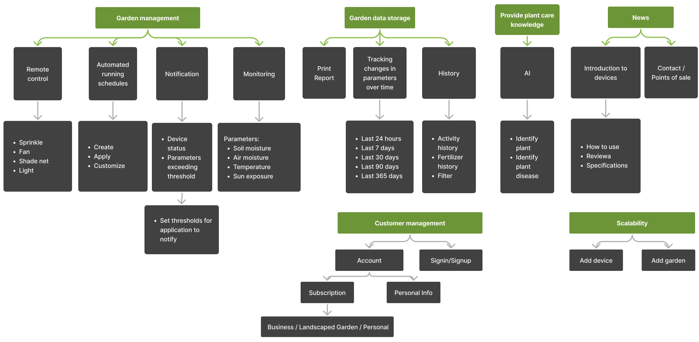
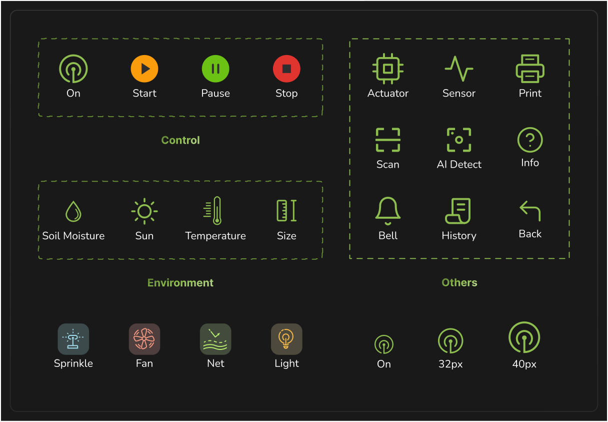
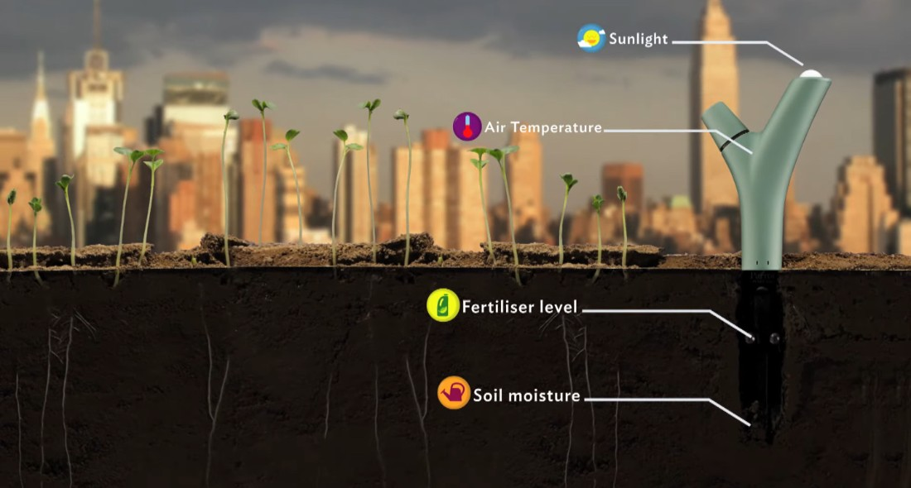
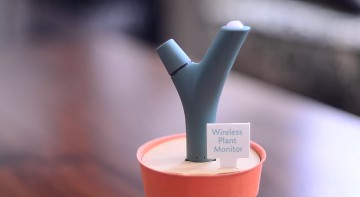
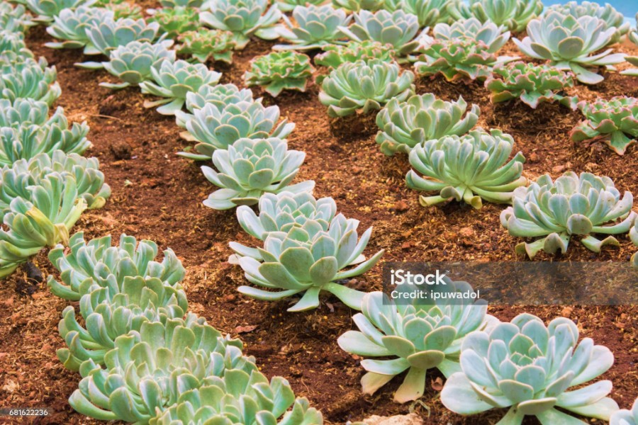

Thông số khu vườn
Đã cập nhật thông số
- Độ ẩm đất
- 32%
- Nhiệt độ
- 24°C
- Độ ẩm không khí
- 62%
- Cường độ sáng
- 12,400lx
Số liệu minh họa theo clip gốc.
Greeny provides solutions to monitor your garden remotely with many devices
Scroll to see how devices will be applied in your garden.
Embedded directly in the garden bed, sensors continuously measure soil moisture, temperature, air humidity, and light intensity - feeding real-time data to the hub.
Đã nhận thông số
Đã cập nhật thông số
Số liệu minh họa theo clip gốc.
Automated irrigation devices triggered by sensor thresholds or user-defined schedules, ensuring plants receive the right amount of water without manual effort.
Ventilation fans that regulate airflow and temperature inside the garden, preventing overheating in enclosed or greenhouse environments.
Motorized shade nets that protect plants from harsh sunlight or rain, controllable directly from the app.
Smart grow lights controllable remotely or via schedule to maintain optimal light conditions for plant growth, day or night.
The central gateway of the system. The Hub connects all garden devices via Wi-Fi Mesh, then communicates to the internet through a Modem via Ethernet/Wi-Fi - bridging the physical garden and the mobile app in real time.
Online mode: When connected to the internet, the app retrieves live garden data and sends control commands globally through the cloud, allowing users to monitor and manage their garden from anywhere in the world.
Offline mode: Without an internet connection, users can still connect directly to the Hub over the local Wi-Fi network, accessing real-time sensor readings and controlling all devices linked to the Hub without any disruption.
Scroll to continue
Devices → Hub → Gateway → The Internet → Greeny App. Greeny App also connects directly to Hub over the local network.
Concept demonstration. Device states and sensor values illustrate the Greeny experience.
GREENY
Introducing "GREENY"
The perfect companion app for gardening from the palm of your hand.
The app is part of an IoT network along with sensors and control devices that optimize work and save time for gardeners.
Greeny's logo is a sophisticated blend of three main elements, each carrying a special meaning:
The first letter of the brand name.
Seedling: This represents the growth and vitality of the garden.
Fingerprint: A fingerprint is unique to each individual, just as our personalized solutions are tailored to the specific needs of our customers.
Greeny offers smart, personalized, and modern management and monitoring solutions to ensure the lush growth of your garden.
The grid logo helps to determine the proportions and arrangement of elements in the logo, including icons and text, to ensure balance and consistency.
The safezone for the logo must be carefully defined to ensure that the logo is displayed clearly, professionally, and is easily recognizable on all backgrounds and in any usage context.
Users who desire to build and care for a private garden at home or on their property.
Businesses that own gardens to create visual appeal and provide an interesting and comfortable space for customers.
Users with large gardens or multiple gardens that they care for and use for commercial purposes.
Phu is the owner of a business that grows and sells succulents and cacti. He and his family manage all garden operations. Daily tasks include checking the soil, watering, adjusting fans, and occasionally setting up shade nets. However, Phu often has to travel for business and learning opportunities, so he doesn't have much time to supervise the garden.
Reduce manual work, save time, and increase reliability. He believes that using technology and science will improve efficiency and support the sustainable growth of his business.
Ms. Lan is currently working at "GreenyBank Commercial Joint Stock Bank." Despite her position as Department Head and having young children, she is still passionate about growing a lovely garden.
Creating her own "cozy garden” for her and family.

#8EBE50Secondary#6C9537Primary#FFFFFFWhite#191919Black#FAFAFA#CBD4E1#64748B#475569#6BC214Success#FB9C0CWarning#4CC1E2Info#E0352FError


Images used for the Greeny sensor are sourced from Parrot Flower Pot to illustrate the Greeny app’s sensor product. This app is created for educational purposes.
(Dashboard)
Provides information on the weather conditions at the garden area. The chart also displays air humidity and forecasts the probability of high or low chances of rain in the area.
Partly Sunny
Rainy
Sunny
Cloudy
Display information for each garden:
Other information:

Bien Hoa - Dong Nai
Bien Hoa - Dong Nai
Bien Hoa - Dong Nai
6 Sensors 15 Actuators
Greeny offers real-time monitoring of crucial environmental factors like soil moisture, air humidity, temperature, sunlight exposure. This help users get deeper understanding of their garden's well-being.
Users can remotely control garden devices such as watering systems, fans, lights, and shade nets. They can schedule these devices to operate at specific times and durations, ensuring optimal conditions for plant growth.
Greeny intelligently adapts devices working schedules according to plant requirements and environmental conditions. Plus, users can set up manual schedules for devices to run daily or weekly at their preferred times
Containing a vast database of various plants, our well-trained model helps to identify any plant with just one scan. Providing you with useful information to grow your beloved gardens.